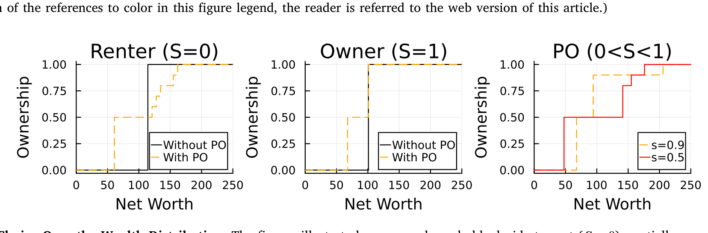
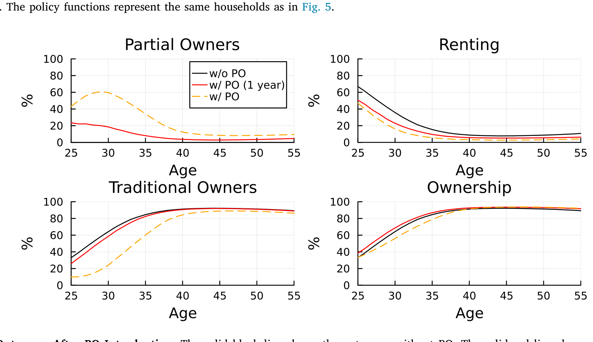
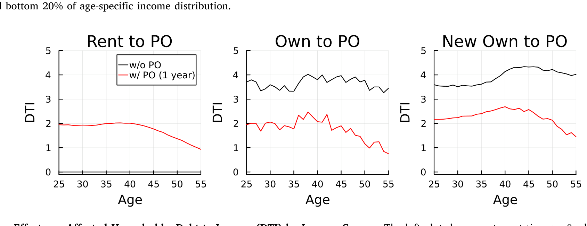
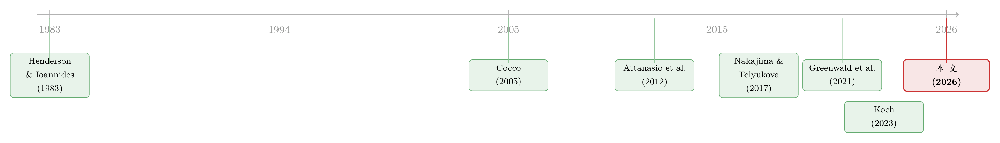

半套房子：当「租还是买」不再是单选题
本文读的是 Brandsaas & Kvaerner (2026, Journal of Financial Economics)：他们把挪威市场上一份真实存在的「部分产权」合同塞进一个标准的生命周期住房模型里，量化回答了三件事——部分产权让更多家庭买进了「一点点」房子；对它的支付意愿在低收入、租房人群中最高（35 岁租房者愿意付出 10% 的可支配收入）；它在抬高人群平均债务收入比的同时压扁了右尾，并在房价崩盘时把总违约率砍掉了大约一半。
1 引言：一道被强行做成单选题的选择
对一个年轻家庭来说，「租房还是买房」大概是一生中最重要的财务决策之一。但仔细想想，这道题的设问方式本身就很奇怪：它是一道单选题。你要么交首付、背上一笔几十年的房贷、成为 100% 的业主；要么一分产权也不沾，纯粹租住。中间那片广阔的地带——「我想拥有一点，但暂时买不起全部」——在传统的住房金融框架里是不存在的。
经济学家管这种性质叫「不可分性」(indivisibility)：房子这种资产，不像股票那样可以买一股、卖半股，它被打包成一个不可拆分的、动辄数百万的大额头寸。过去十到十五年，许多城市的实际房价大约翻了一倍 (Favilukis et al., 2023; Hsieh and Moretti, 2019)，于是这道单选题对年轻人越来越不友好：买不起全款，就只能一直租下去。
那么，一个自然的问题是：如果我们能把这道单选题改成一道连续选择题——允许家庭买下房子的 50%、60%、乃至 90%，剩下的部分照常付租金——会发生什么？
这正是本文的出发点。两位作者（一位在美联储理事会，一位在 BI 挪威商学院）注意到，挪威、瑞典、英国、美国、冰岛、澳大利亚和中国都已经出现了某种形式的部分产权 (Partial Ownership, PO)。它不是空想：在挪威，营利性开发商、金融中介、公私合营机构都在卖这种合同；一份调查显示，37% 的家庭、70% 的租房者表示会在下一次置业时考虑它。
但「市场上有」和「它到底改变了什么」是两回事。本文做的，是把这份真实合同请进一个标准的住房生命周期模型，然后回答三个问题：它如何改变住房投资？它给家庭带来多大福利、谁受益最多？以及监管者最关心的那一条——它会不会动摇金融稳定？
2 一份真实的合同：挪威的「deleie」
要把 PO 写进模型，你得先弄清楚现实里的 PO 长什么样。作者用的是挪威最大住宅开发商之一 OBOS 提供的、最常见的营利性 PO 合同（挪威语 "deleie"）。它的规则干净得出奇：
- 家庭至少买下 50% 的产权，之后可以每次以 10 个百分点的幅度增持；
- 没买的那部分照付租金，租金随通胀指数化，和普通租约一样；
- 业主随时可以挂牌卖房，在公开市场按普通二手房成交（外人看不出这是 PO 房），卖出净收益按产权份额分配；
- 贷款价值比 (loan-to-value, LTV) 和债务收入比 (debt-to-income, DTI) 的监管约束同样适用于 PO。
举个数：买一套 400 万挪威克朗房子的 50%，最低首付是 30 万克朗，即自己那 50% 份额购买价的 15%。换句话说，PO 把「上车」所需的初始权益和房贷规模都按比例缩小了。
别把 PO 和分时度假 (timeshare) 搞混。分时度假给你的是「一年里占用房子若干天」的使用权；PO 给你的是货真价实的产权份额，外加日后转为完整业主的期权。这个区别，正是后文所有结论的根基。
数据里的 PO 买家画像也很一致：平均年龄约 35 岁，买的多是城市里的小公寓（平均 59 平米、2.67 个房间），59% 的人一开始就只买最低的 50% 份额。记住这个「59% 选最小份额」的事实——它后面会变成识别整个模型最关键的一把钥匙。
3 模型：把住房选择「凸化」
接着，作者把这份合同写进一个标准的生命周期住房模型（沿用 Cocco, 2005；Attanasio et al., 2012；Davis and Van Nieuwerburgh, 2015 的传统）。家庭从 24 岁进入模型，工作 \(K\) 年，再退休 \(T-K\) 年，每期选择消费 \(C_a\)、住房服务 \(H_a\)，以及——这是本文的新维度——产权份额 \(S_a\)。
家庭最大化的一生效用是：
$$\max_{C_a,H_a,S_a}\; E_{24}\!\left[\sum_{a=24}^{T}\beta^{a-24}\,\frac{\left(C_a^{1-\eta}H_a^{\eta}\,\chi(S_a)\right)^{1-\gamma}}{1-\gamma}\right] + \beta^{T-23}B(Q)$$
其中 \(\beta<1\) 是贴现因子，\(\gamma\) 是相对风险厌恶，\(\eta\) 是住房在消费篮子里的权重，\(B(Q)\) 是遗赠函数（沿用 Vestman, 2019）。消费 \(C\) 和住房服务 \(H\) 进入一个标准的 Cobb–Douglas 内核，再套上 CRRA 效用——到这里都是教科书。
但真正关键的一步在于 \(\chi(S_a)\) 这一项。它是「拥有」带来的效用溢价，捕捉了「这是我自己的家」相对于「我只是个租客」的那份心理与实际收益。它的形式是：
这个看似不起眼的设定，其实是整篇论文的「阿基米德支点」。在没有 PO 的世界里，\(S\) 只能取 0（租房）或 1（完整业主），\(\alpha\) 是冗余的、根本测不出来。一旦 PO 把 \(S\) 放开到 $(0,1)$ 的连续区间，\(\alpha\) 这个产权弹性 (ownership elasticity) 就成了一个有血有肉、可以被数据钉死的参数：它决定了「买一半房子」到底能给你带来一半的归属感，还是远不止一半。
预算约束这边则保持了住房模型的标准配置：财富 \(W\) 等于现金账户加房产净值，现金账户的无风险利率为 \(r_f\)，房贷利率是 \(r_f+\theta\)（\(\theta\) 是房贷溢价），房贷是一年一滚的单期工具。房价服从随机游走，租售比恒定，收入是平稳的——这意味着房价可能涨到家庭连最小的房子都租不起，于是作者还加了一个与市场租金挂钩的最低工资 \(y(P)\) 兜底。
4 识别：那个叫「产权弹性」的新参数
于是问题归结为：怎么从数据里把 \(\alpha\) 估出来？
这就要回到第 2 节那个被特意标记的事实——59% 的 PO 买家一开始只买最低的 50% 份额，整个数据里的平均初始份额只有 57%。作者构造的识别策略，正是利用「合同签订时 PO 用户选择的产权份额」这一可观测变量。
直觉是这样的：假如 \(\alpha\) 很大（即只有接近完整产权才能拿到归属感溢价），那么理性的家庭为了享受「拥有」的好处，应该尽量多买、把份额堆到接近 90%。可现实里大家偏偏扎堆选最低的 50%。要让模型同时匹配「大家爱买、又只买一半」这两件事，唯一的办法就是 \(\alpha\) 很小：哪怕只持有一半产权，也已经能拿到大部分的归属感。
把这条逻辑量化，作者的估计给出一个相当有冲击力的结论：
一个只拥有房子 50% 产权的家庭，能获得完整业主住房效用溢价的 80%。
换算过来，产权弹性 \(\alpha\approx 0.32\)（因为 \(0.5^{\alpha}=0.8\)）。也就是说，「拥有感」对产权份额是高度凹的——前一半产权买到了八成的幸福，后一半产权只是锦上添花。这个估计，几乎是后面所有福利与稳定性结论的源头。
5 数据与估计
作者用模拟矩估计 (simulated method of moments, SMM) 来校准和估计模型。喂进去的数据是挪威的「全民级」行政微观数据加上一份独家的 PO 合同数据：
- 财富、房产、收入、教育来自挪威税务登记 (NTR) 和挪威统计局 (SSB)；
- PO 合同数据来自 OBOS，斯堪的纳维亚最大的住宅建造商、也是最大的 PO 供应商；
- 房屋面积分布来自 Eiendomsverdi AS。
模型把住房市场按惯例做了部分分割：四档离散的房型，最小的只能租，最大的只能完整买，中间两档可租、可 PO、可全款买。这个设定不是凭空来的——它反映了现实中的市场格局：最小的单元（学生、职业生涯早期的人）很少有人买，最大的单元很少有人租，而 PO 恰好天然地在中间档位竞争，和数据吻合。图 4 展示了第三阶段估计的矩匹配情况，模型对关键矩的拟合相当贴合。
6 主要结果：谁上了车、值多少钱、稳不稳
6.1 更多人买进了「一点点」房子
第一个结果直白而有力。在短期，PO 一出现，大量原本租房的人切换成了部分业主：25 到 45 岁这个 PO 主力人群里，原本约三分之一在租房，PO 推出后不久这个比例直接腰斩。但耐人寻味的是，PO 在一年后对传统完整产权几乎没有冲击——它抢的不是完整业主的份额，而是把租客往上托了一档。长期看，约 30% 的年轻家庭成为部分业主，这个数字和前面那份「37% 家庭、70% 租客愿意考虑 PO」的调查惊人地吻合。
图 5 把这件事画得最清楚：沿着财富分布看过去，PO 精准地填补了「租房」与「完整拥有」之间那段过去无人填补的中间地带。

Figure 5: Housing Choice Over the Wealth Distribution. The figures illustrate how young households decide to rent (𝑆=0), partially own (0<𝑆<1), or own
图 7 则给出总量层面的图景——引入 PO（红线）相对于没有 PO 的世界（黑线），租房比例显著下降，而 PO 成为吸纳这部分需求的新通道。

Figure 7: Aggregate Outcomes After PO Introduction. The solid black line shows the outcomes without PO. The solid red line shows the outcome of intere
6.2 支付意愿：租客和穷人最想要
第二个结果回答「值多少钱」。作者计算了支付意愿 (willingness-to-pay, WTP)：对 25 到 45 岁的家庭，能用上 PO 的平均福利收益相当于 5% 到 7% 的可支配收入——这个量级甚至超过了反向抵押 (reverse mortgage) 带来的福利收益 (Nakajima and Telyukova, 2017)。
更重要的是异质性。模型告诉我们，WTP 在租客和低收入家庭里最高：
一个 35 岁的租客，愿意付出 10% 的可支配收入来换取使用 PO 的权利；而对业主，这个数字不到 5%。
为什么是租客？两个原因。其一，PO 让现在的租客也能尝到「拥有」的那部分效用好处——这正是第 4 节那个 \(\alpha\) 小、「一半产权拿八成幸福」的估计在发力。其二，PO 放松了借贷约束，而借贷约束对租客的束缚远比对业主更紧。图 6 的比较静态进一步显示，房价越是高不可攀、负担能力越差，PO 的吸引力就越强——它本质上是一件「负担能力危机」的对冲工具。
值得一提的是，PO 让那些原本会被挤出股市的年轻家庭多了一条路。Cocco (2005) 早就指出，因为要把钱砸进房子，年轻又不那么富裕的家庭几乎没有余力投股票；本文显示，许多人在有了 PO 后只买「一点点」房子，从而缓解了住房投资对股权投资的挤出。（关于低收入家庭住房信贷可得性如何被政策与监管悄悄收紧，可参见《罚款本是好工具，为什么这次罚出了一场信贷退潮？》。）
6.3 金融稳定：一个反直觉的双面结果
第三个结果，也是监管者最该读的一段。过去的危机一再证明，房地产是金融稳定的命门 (Mian et al., 2017)，所以政策制定者对 PO 这种新玩意儿天然警惕。作者于是直接拷问 PO 对债务收入比 (DTI) 和违约风险的影响，结果出人意料地呈现出两副面孔。
先说 DTI。一方面，许多租客要借钱才能变成部分业主，于是人群的平均 DTI 上升了——这听上去像个坏消息。但另一方面，那些原本财富刚好够格做传统业主的家庭，转头选择了 PO 并因此少借了钱，于是 DTI 分布的右尾被压缩了。也就是说，PO 把更多人拉进了「有点负债」的中段，同时削掉了「负债到顶」的极端尾部。图 11 按收入分组展示了受影响家庭的 DTI 变化。

Figure 11: Average Effects on Affected Households: Debt-to-Income (DTI) by Income Groups. The left plot shows renters at time who would be renting
再说违约。PO 降低了总违约率，但降幅高度依赖冲击的类型：
- 当房价崩盘时，PO 的广泛使用把总违约率砍掉了大约一半；
- 当失业率上升时，好处依然存在，但小得多。
这个差异本身就是一个漂亮的机制检验。PO 减小了住房投资规模和所需房贷，于是家庭的杠杆更低——房价下跌时不容易「资不抵债」，所以违约大减。但失业是收入冲击，它打击的是还款能力本身，跟你是 50% 还是 100% 持有房子关系不大，所以 PO 帮不上太多忙。换句话说，PO 是一件针对「资产端」风险的保险，而非针对「收入端」风险的保险。
7 文献脉络
把这篇论文放回它所属的那条研究长河里，故事会更清楚。
最早，住房的「租 vs 买」被建模成一道二元的产权选择题（Henderson and Ioannides, 1983）。真正把它装进现代量化框架的，是 Cocco (2005)——他在生命周期投资组合选择里引入住房，奠定了此后几乎所有住房生命周期模型的范式；Attanasio et al. (2012)、Davis and Van Nieuwerburgh (2015) 沿着这条线把住房需求的生命周期刻画推向成熟。
接着，这条脉络分出一支「用结构模型给新型住房金融产品定价、算福利」的支流：Nakajima and Telyukova (2017) 量化了反向抵押的福利收益，Greenwald et al. (2021) 研究了共享增值抵押 (shared appreciation mortgage, SAM) 与金融脆弱性。它们都在问同一个元问题——一项新的住房金融合约，能给家庭带来多少福利、又会给系统带来多少风险？

而最贴近本文的，是与之几乎同时独立完成的 Koch (2023)，她研究分数产权 (fractional homeownership) 对生命周期组合选择的影响。两篇文章有重叠，但落点不同：Koch 关注的是住房市场中的进入与退出、组合选择；本文则用独家 PO 数据估计出营利性 PO 的偏好参数（那个产权弹性 \(\alpha\)），并据此预测 PO 市场的长期演化、评估其金融稳定含义。本文真正的位置，是这条脉络里第一篇把一份真实成交的、营利性的 PO 合同请进生命周期模型、并用全民级微观数据加独家合同数据估计它的研究。
8 评论与延伸（Q&A + 研究方向）
(a) 几个可能的疑问
Q：PO 和共享权益贷款（SEM）、共享增值抵押（SAM）到底有什么不同？
核心差别在「谁拥有、谁负责」。SEM 里，贷款人出一部分首付、换取一份权益，但用户承担全部支出且不能调整份额；SAM 是贷款人换取未来房价升值的一份。PO 则是真正的共同所有权：产权与责任按份额拆分，部分业主随时可以增持份额、转为完整业主。正是这种「可调份额 + 共同担责」让 PO 同时缓解了租赁市场里的道德风险、逆向选择、空置和开发商偷工减料四类摩擦。
Q：用「初始产权份额」识别产权弹性 α，可信吗？
这是全文识别的命脉，也是最该被追问的地方。逻辑链是：观察到大家爱买 PO、却扎堆只买 50%，反推出「一半产权就能拿到八成幸福」（α 很小）。但这条推断依赖一个假设——份额选择反映的是偏好，而非别的摩擦。如果很多人选 50% 其实是被流动性约束逼的（想多买但首付不够），那 α 就会被低估。作者用监管约束和稳健性检验来缓解这个担忧，但「最小份额扎堆」到底有多少来自偏好、多少来自约束，仍是值得继续掰扯的。
Q：为什么 PO 既抬高了平均 DTI，又压缩了它的右尾？
因为两股人流方向相反。租客为了上车去借钱，把人群平均 DTI 往上抬；而原本财富刚够做传统业主的人转投 PO、反而少借了钱，把分布最右端的高杠杆尾部削平。净效果是更多人落在「中等负债」区间，极端高杠杆的人变少了。
Q：为什么房价崩盘时 PO 能减半违约，失业冲击时却效果有限？
因为 PO 是「资产端」的保险，不是「收入端」的保险。PO 降低杠杆，房价下跌时不容易资不抵债，所以违约大减；但失业冲击打击的是还款能力本身，跟你持有 50% 还是 100% 的房子关系不大，PO 自然帮不上太多。
Q：这些结论能外推到美国吗？
要小心。模型校准在挪威：一个有竞争性 PO 市场、租赁市场运转良好、且违约率极低（2008–2020 年 90 天以上逾期率约 0.7%，仅为美国的四分之一）的国家。美国违约率更高、制度环境不同（房利美等机构可能阻碍新型抵押产品落地），所以福利与稳定性的具体量级未必能照搬。不过作者也指出，PO 能在竞争市场里内生出现而无需政策干预，这反而是它相对于抵押类产品的一个制度优势。
Q：那 OBOS 这样的开发商为什么愿意卖 PO，而不是干脆全款卖或出租？
模型模拟显示，提供 PO 给开发商带来的预期现值回报，恰好介于「卖房」和「出租」之间。再加上 PO 缓解了空置、维护道德风险、开发商偷工减料等摩擦，并能在房贷监管收紧、开发成本上升而房价难降的环境里多卖出房子——这让 PO 对供给方而言是一门可持续的生意，而非慈善。
(b) 几个可能的研究问题与提案
1. PO 与抵押贷款/MBS 的信用风险定价
【经济故事】既然 PO 系统性地降低了房价崩盘时的违约率，那么一个 PO 渗透率更高的市场，其抵押贷款池的尾部风险就更低——这应该反映在信用利差和 MBS 定价里。【可行性】中。需要把区域 PO 渗透率与抵押贷款表现、利差数据匹配；识别上可利用「同一栋楼 PO 套数上限 20%」这类制度性约束制造的外生变异。
2. 把「部分产权」的思路搬到公司债/信用市场
【经济故事】PO 的本质是「把一个不可分、需要大额权益的资产，凸化成可按份额持有的连续选择」。信用市场里也有类似的不可分性与高门槛（如整笔贷款、整张债券的最低面额）。研究「部分持有/共同投资结构」如何改变中小投资者进入信用市场的边界、以及这对信用风险分担的含义，是一个自然的延伸。【可行性】中偏低，关键看能否找到一个像 OBOS 这样干净、可观测的「分数信用持有」合同数据。
3. 外资持有人与住房负担能力下的 PO 需求
【经济故事】Favilukis and Nieuwerburgh (2021) 显示外地/外资买家会抬高城市房价、压低本地福利。如果 PO 是「负担能力危机」的对冲工具，那么外资流入越猛、房价越高的城市，本地家庭对 PO 的需求与福利收益就该越大——两者存在有趣的互动。【可行性】中。需要外资购房份额的区域变异加 PO 渗透率数据，识别可借助税收或签证政策冲击。
4. PO 单元的二级市场流动性
【经济故事】本文假设 PO 房在公开市场按普通二手房成交、外人看不出是 PO。但这是否真的成立？PO 房的挂牌时长、成交折价、流动性是否系统性不同于普通房，直接关系到 PO 合约的可执行性和定价。【可行性】高。OBOS 的挂牌与成交数据原则上可观测，可直接做 hedonic 回归与挂牌时长分析。
5. PO 作为绕开 LTV/DTI 宏观审慎约束的通道
【经济故事】PO 把上车所需的初始权益和房贷规模按份额缩小，这等于给受 LTV/DTI 上限卡住的家庭开了一道侧门。它对宏观审慎政策有效性的含义是双刃的：既扩大了住房可得性，又可能侵蚀监管约束的初衷。【可行性】高。挪威 2016 年起的 LTV=0.85、DTI=5.0 约束加全民行政数据，是做断点/政策冲击识别的理想环境。
9 我的判断
这篇论文的贡献，在我看来主要不在「发现了某个惊人系数」，而在于它第一个把一份真实成交的、营利性的部分产权合同，原样请进了住房生命周期模型，并用全民级微观数据加独家合同数据把它估了出来。其中那个产权弹性 \(\alpha\) 的识别策略尤其优雅——用「PO 用户在签约时选了多大份额」这一可观测行为，反推出「拥有感」对份额的凹性，是把一个抽象偏好参数钉在数据上的漂亮一手。而「PO 是资产端保险、不是收入端保险」这个机制结论，则把金融稳定那一节从一句笼统的「降低违约」提升成了一个可证伪的论断。
要我说出担忧，最大的一条仍是识别的纯度：用初始份额识别 \(\alpha\)，前提是份额选择主要反映偏好而非流动性约束；「59% 扎堆选最低份额」里到底有多少是「我只想要一半」，多少是「我只买得起一半」，这条线很难完全划清，而它几乎决定了所有福利数字的量级。第二条是外部有效性：所有结论都被校准在挪威这个高自有率、低违约、租赁市场健全的特殊环境里，搬到违约率高出四倍、制度迥异的美国，量级恐怕要打不小的折扣。
后续我最想看到的，是把这套模型从「家庭一般均衡」推向「房价一般均衡」——如果 PO 真的把大批租客托举成部分业主，需求曲线右移，房价本身会怎么动？本文把房价当作外生随机游走，这在评估一项可能重塑住房需求结构的金融创新时，是个需要被认真松开的假设。
参考文献
Attanasio, O.P., Bottazzi, R., Low, H.W., Nesheim, L., Wakefield, M. (2012). Modelling the demand for housing over the life cycle. Review of Economic Dynamics 15(1), 1–18.
Brandsaas, E.E., Kvaerner, J.S. (2026). Partial homeownership: A quantitative analysis. Journal of Financial Economics 179, 104256.
Cocco, J.F. (2005). Portfolio choice in the presence of housing. Review of Financial Studies 18(2), 535–567.
D'Acunto, F., Rossi, A.G. (2022). Regressive mortgage credit redistribution in the post-crisis era. Review of Financial Studies 35(1), 482–525.
Davis, M.A., Van Nieuwerburgh, S. (2015). Housing, finance, and the macroeconomy. In Handbook of Regional and Urban Economics, Vol. 5, Elsevier, pp. 753–811.
Favilukis, J., Mabille, P., Van Nieuwerburgh, S. (2023). Affordable housing and city welfare. Review of Economic Studies 90(1), 293–330.
Favilukis, J., Nieuwerburgh, S.V. (2021). Out-of-town home buyers and city welfare. Journal of Finance 76(5), 2577–2638.
Greenwald, D.L., Landvoigt, T., Nieuwerburgh, S.V. (2021). Financial fragility with SAM? Journal of Finance 76(2), 651–706.
Henderson, J.V., Ioannides, Y.M. (1983). A model of housing tenure choice. American Economic Review 73(1), 98–113.
Hsieh, C.-T., Moretti, E. (2019). Housing constraints and spatial misallocation. American Economic Journal: Macroeconomics 11(2), 1–39.
Kaplan, G., Violante, G.L. (2022). The marginal propensity to consume in heterogeneous agent models. Annual Review of Economics 14, 747–775.
Koch, M. (2023). Fractional homeownership and its impact on life cycle portfolio choice. Available at SSRN 4500997.
Mabille, P. (2023). The missing homebuyers: Regional heterogeneity and credit contractions. Review of Financial Studies 36(7), 2756–2796.
Mian, A., Sufi, A., Verner, E. (2017). Household debt and business cycle worldwide. Quarterly Journal of Economics 132(4), 1755–1817.
Nakajima, M., Telyukova, I.A. (2017). Reverse mortgage loans: A quantitative analysis. Journal of Finance 72(2), 911–950.
Vestman, R. (2019). Limited stock market participation among renters and homeowners. Review of Financial Studies 32(4), 1494–1535.